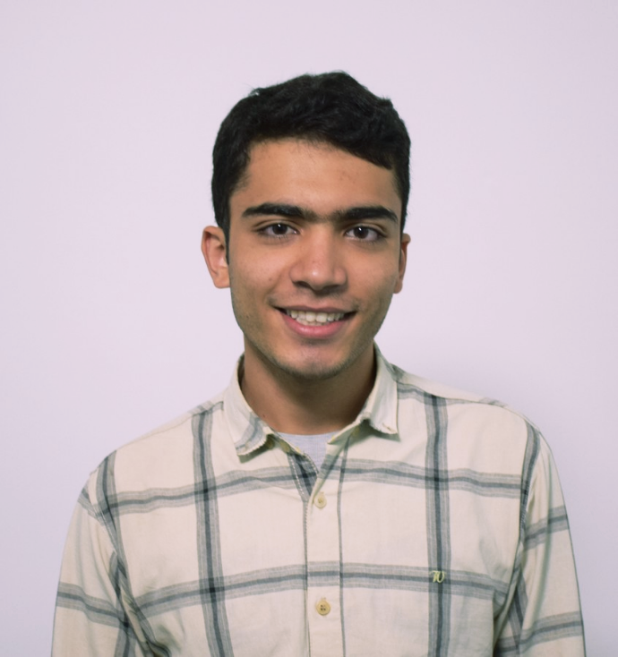

Software Engineering Student
Tehran, Iran
qniksefat@gmail.com
Languages
Native in Persian
Fluent in English
Can read in Arabic
در پرده اسرار کسی را ره نیست.
زین تعبیه جان هیچکس آگه نیست.
جز در دل خاک هیچ منزلگه نیست.
می خور! که چنین فسانهها کوته نیست.
I'm a software engineering student with a background in Physics. I like systems, and the complex system I want to comprehend the most is my Brain. I'm interested in computational neuroscience: I want to understand the connection between Consciousness and Computation to this network. I'm also familiar with deep learning and engaged in ML approaches to solving problems. I like to travel and I love Persian literature.
I'm studying Software Engineering major at Computer Engineering Department at Sharif University of Technology.
I have a Silver medal in Astronomy & Astrophysics Olympiad. I was interested in Physics and Cosmology in most of my high school years.
I graduated in Math & Physics major from Allameh Helli high school under National Organization for Developing Exceptional Talents. In Helli, I started learning how to think of problems from my great teachers. I can say they kind of shaped my thoughts those years. Allameh Helli High School is known for the best high school in the country and I'll always have it in the mind.
I am now researching on brain networks analysis at Digital Media Laboratory in Brain Group directed by Prof. Hamid Reza Rabiee. DML is one of the best laboratories in Sharif University of Technology and is based in 8th floor at the CE department.
After we held the Sharif Brain and Cognition Seminar in 2017 with as members of SSC, we worked to create an indepent community inside Sharif, defined among EE, CE, Physics, Math, and Chemistry departments and Philosophy of Science group. Our Cognitive Sciences Community named Shenasa still works and hold annually seminars and events to encourage people at Sharif to get familiar with Cognitive Sceinces.
I was the chief TA for Signals and Systems course, presented by Dr. Shirazi.
I taught Physics and Astronomy Olympiads for years in a few of the best high schools in Tehran and Isfahan. I have taught in Allameh Helli, Farzanegan, Ejei, and Salam High Schools.
In Pushe, I was first intern for cloud engineering and then for some months I helped the public relations team, to build better experience and presentation to our customers which were mobile developers.